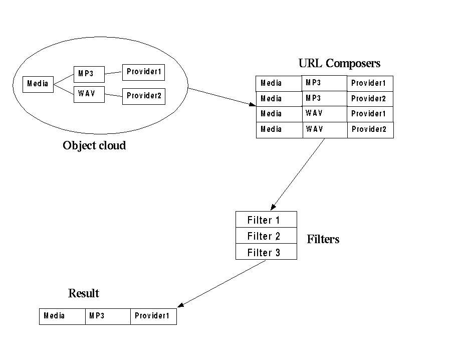

This software is OSI Certified Open Source Software. OSI Certified is a certification mark of the Open Source Initiative.
The license (Mozilla version 1.0) can be read at the MMBase site. See http://www.mmbase.org/license
Table of Contents
The media application providers a comprehensive and generic way to handle media within MMBase. The first phase of the Media project focused on creating a generic structure that can be easily reused, and on which new media related software can be build. The current media application can be used to maintain media, which consist of audio and video. After analyses of the already existing media integration within MMBase, and investigation of the wishes by organisations that were using the MMBase media integration, we came to the following list of issues that should be covered by the first phase of the Media project:
Defining Generic Object Types. While creating additional media tools, such as automatic recording of radio and television programs, you have to make sure that organizations are using the same object model. Otherwise the software cannot be easily used. Generic object types also enables you to easily exchange media information between different MMBase systems.
Inherentance. Inherentance was something that was lacking within MMBase. MMBase 1.6.3 is the first release with inherintance functionality and this makes it possible to use audio en video interchangebly. This feature is nice to use while listing media in your web site instead of audio and video separated.
Filters. Media maintained within MMBase can have all kind of different formats such as: mp3, realaudio, quicktime, etc. and media can also be located on different web servers. To manage that a visitor on your web site retrieves the media in the most appropriate format and from the most desirable web server filters can be used.
Url Composers. The actual information that will be provided can be manipulated in a generic way. This enables you to provide another url if the media format is mp3 instead of realaudio. (i.e. a realaudio url can contain information about author, start/stop times of the media file, copyright information etc.)
Media can be easily put on a web site by using a scripting language. This chapter will contain some examples that will show how to do this with the standard MMBase taglibs. The first example shows how an audio fragment can be published on your web site. I assume that this example is understandable to read, if not i refer you to the MMBase taglib documentation.
<%@ taglib uri="http://www.mmbase.org/mmbase-taglib-1.0" prefix="mm"%>
<mm:cloud>
<mm:node number="number of audio fragment">
<a href="<mm:field name="url(mp3)" />"><mm:field name="title" /></a>
</mm:node>
</mm:cloud>This example will put a hyper link on your web site. The link will be the most appropriate media (in this case it will be probably mp3), the text of the link will be the title of the media fragment.
Audio and video are both media types in the media application. This means that instead of showing only audio, or only video, also media can be showed. The following example shows the titles of all media fragments (audio and video mixed together).
<%@ taglib uri="http://www.mmbase.org/mmbase-taglib-1.0" prefix="mm"%>
<mm:cloud>
<mm:listnodes type="mediafragments">
<mm:field name="title" />
</mm:listnode>
</mm:cloud>
One of the main issues to start the Media project was to define a generic object model that can be used for all kinds of media in all kinds of situations. Figure 1 shows how inheritance of object types is used within the media project. A Media fragment is a generic type which is extended by two more specific types: audio fragments, and video fragments. The Media source is also a object type that is extended by audio sources, and video sources. In case of the video source the object type even contains more fields. The advantage of using inheritance is that you can handle media which consists of audio and video. e.g. You are able to show all media related to a interview, this media can be audio or video. Figure 1 shows the object types that are used, beneath the picture a more detailed explanation of the object types is given.
After analysis of the media object structure that was already available in MMBase we designed the object structure shown in Figure 1. The most important object types are: media fragments, media sources, media providers. These types will be explained in more detail.
Media fragments are describing the actual media. Some fields like: title, subtitle, intro, body are available for this description. Regardless if the media is available in different formats/speeds/etc. it will be described only once within MMBase (see figure 2). This makes it easy to relate for example a song with a band (you only relate it once) and to change the description of the song without having it to change it for all different media types.
Media sources are a description for the actual kind of media files that are provided somewhere. i.e. If you provide mp3/quicktime/divx these file have to exist somewhere. To tell MMBase that these files are available you have to create a media source for every kind of media that you provide. In a media source things like: speed (kbs), channels (stereo/mono/dts), fps (frames per second), format (avi,mpeg), codex (divx, avi) and more can be specified.
Media providers are systems that are providing media files. In this way different streaming servers at different locations can be used.


Within the Media project a media fragment can contain different media sources, and the media sources can contain different media providers. To decide which actual media source, and which media provider is going to be used for the visitor requesting a media fragment, Filters can be used. The Media project provides some default filters, but organization specific filters can easily be made and plugged in. This chapter will describe some default filters and how you can plug in a new filters.
The figure below shows the sequence of actions that occur when a media fragment is requested. While requesting a media fragment we have to find out which media source, and which media provider are most appropriate for the requestor of the media fragment. As can be seen in the figure, the object cloud according to the media fragment will be transformed in a list of URL Composers. An URL Composer mainly contains information about the media fragment, media source, media provider, and user information. More information about URL Composers can be found in the Chapter 'URL Composers'. The list of URL Composers will go through a chain of filters which decide which URL Composer is the most appropriate. After filtering the list, one, or more URL Composers will be returned.
|  |
A filter can do two things with the list of URL Composers. It can remove URL Composers from the list, and it can sort the list. e.g. When you want to disable all mp3 files at your site, you are able to add a RemoveMP3Filter to the chain of filters. This filter can remove all URL Composers that have a media source with format=mp3. The order of the URL Composer list is also important. This means that the first URL Composer has a higher priority than an URL Composer that is mentioned lower in the list. In this way a filter can decide which URL Composers are more appropriate, and give the sorted list to the next filter that can evaluate the order again. Keep in mind that the media filter mentioned lower in the chain is the last filter in charge.
The chain of filters can be configured in the filter configuration file, named filter.xml. The filter mentioned first is the filter that will handle the list of URL Composers first. This list of filters can be dynamically configured.
<chain> <filter id="format">org.mmbase.applications.media.filters.ServerFormatSorter</filter> <filter id="real">org.mmbase.applications.media.filters.RealSorter</filter> </chain>
The ServerFormatSorter, and the RealSorter are two filters available within the media project. With the ServerFormatSorter you can configure (on the server) which media format you prefer, to be returned. The example below shows that the most preferred media format is real media (rm). If no rm can be found the most appropriate format will be ra. If no ra will be found the most appropriate format will be mp3. If none of the specified formats can be found the list of URL Composers will be returned unsorted. The ServerFormatSorter will sort the url composers in such a way that the most appropriate format is higher in the list. This filter will not remove URL Composers and it therby named Sorter, instead of Filter. All URL Composers will stay available which enables a second filter to manipulate the complete URL composer list again.
<config filter="format">
<preferredSource>
<source format="rm" />
<source format="ra" />
<source format="mp3" />
</preferredSource>
</config>
The real filter sorts the real media sources in the most appropriate way. minspeed specifies that media with a lower speed than minspeed is not appropriate and will be deleted from the URL composer list. Media with a higher bit rate than maxspeed will also be deleted from the URL Composer list. The same counts for channels. The real filter is a filter that takes user information into account. If a preferred bitrate, and/or number of channels is specified by the user, this filter will evaluate which real media source is most appropriate. The way user information can be passed to a filter can be see in the chapter 'Templates'. If the user doesn't specify the bit rate/channels the default values will be used.
<config filter="real">
<realAudio>
<minspeed>16000</minspeed>
<maxspeed>96000</maxspeed>
<minchannels>1</minchannels>
<maxchannels>2</maxchannels>
<defaultspeed>96000</defaultspeed>
<defaultchannels>2</defaultchannels>
</realAudio>
</config>
To be able to create your own Filters a filter interface has been defined (see below). The interface consists of two methods: filter(), and configure(). The filter() method retrieves the list of URL Composers. The filter can sort and delete items from the list. The filtered list will be returned and passed to the next filter if available. The configure() method can be used to receive configuration parameters from the filter.xml file into your filter. By adding the new filter into the chain of filter.xml, the new filter will be used. See e.g. the Real filter how you can put configuration information in filter.xml and how you can retrieve this information into your filter.
public interface Filter {
public List filter(List urlcomposers);
public void configure(XMLBasicReader reader, Element e);
}
URL Composers are used to create the actual result that will be given to the requester of the media fragment. A URL Composer mainly contains the following information: the requested media fragment, a media source, a media provider, and user specific information. The URL Composer uses this information to create the result. e.g. The URL Composer can use the protocol (rtsp://), host (streams.mmbase.org), rootpath information from the media provider (music), and the url information from the media source (test.mp3) to create something like: rtsp://streams.mmbase.org/music/test.mp3. The media project contains some URL Composers that can be used, but new URL Composers can be easily plugged in. This chapter will show how to use some standard URL Composers, and how new URL Composers can be created.
The configuration information of the url composers can be found in the file urlcomposers.xml. While creating the list of URL Composers the information in this configuration file is used. This means according to the format of the media source, and the protocol information of the media provider a specified URL Composer can be plugged in. The example belows shows which URLComposer will be used by default. The example shows also that in case of format=ra, and the protocol=rtsp the RealURLComposer will be used.
<urlcomposers> <default>org.mmbase.applications.media.urlcomposers.URLComposer</default> <urlcomposer format="ra" protocol="rtsp">org.mmbase.applications.media.urlcomposers.RealURLComposer</urlcomposer> </urlcomposer>The default URL Composer will just create an url like: http://streams.mmbase.org/music/test.mp3. The RealURLComposer will also add start, and stop times to the URI. In this way you can use the subfragment mechanism (explained in the object model section). The url will look like: http://streams.mmbase.org/music/test.ra?start=10.4&stop=52.4. The RealURLComposer will also make sure that the URL is conform the Real specifications. If you want to add more information to this URI, you can easily extend the RealURLComposer and add extra information to the URI.
URL Composers can also take information of the requester of the media fragment in mind. This enables URL Composers to behave in a specific way according to the information that is provider by the requester. We will explain this with a simple template example.
<%@ taglib uri="http://www.mmbase.org/mmbase-taglib-1.0" prefix="mm"%>
<mm:cloud>
<mm:node number="number of audio fragment">
<a href="
<mm:function name="url">
<mm:param name="format">ra</mm:param>
<mm:param name="type">musicsite</mm:param>
</mm:function>
"><mm:field name="title" /></a>
</mm:node>
</mm:cloud>
The parameter 'type' can be used by the URL Composer to generate an url in a special way. Of course this implies putting the functionality into a java class. But all information about how to generate url will be handled at one place within the media project.
Johannes Verelst
</authorblurb>In this section we will demonstrate an example where different URLs are generated for smallband and broadband streams, based on two filters. We know that the streaming server contains the following URLs: http://cgi.omroep.nl/cgi-bin/streams?/tv/ncrv/manbijthond/sb.20051205.rm?title=Man bijt hond http://cgi.omroep.nl/cgi-bin/streams?/tv/ncrv/manbijthond/bb.20051205.rm?title=Man bijt hond http://cgi.omroep.nl/cgi-bin/streams?/tv/ncrv/manbijthond/sb.20051205.asf?title=Man bijt hond http://cgi.omroep.nl/cgi-bin/streams?/tv/ncrv/manbijthond/bb.20051205.asf?title=Man bijt hond We want to be able to generate these based on one videofragment, that we can relate to four different videosources. These videosources contain information about the bitrate and format, and based on these we want to be able to generate the urls. What will happen now is if the 'url' function is called on the videofragment node, a list of URLs will be generated for this fragment. We want to be able to parameterize this function call to get only the URL for a specific bitrate and format. To do this, we create the following 'filters.xml' file:
<?xml version="1.0" encoding="UTF-8" ?>
<!DOCTYPE mainFilter SYSTEM "http://www.mmbase.org/dtd/mediafilter_1_0.dtd" [
<!ENTITY % configSubTags "bitrates" >
<!ENTITY % bitrate SYSTEM "http://www.mmbase.org/dtd/clientbitratefilter_1_0.dtd" >
%bitrate;
]>
<mainFilter>
<chain>
<filter>org.mmbase.applications.media.filters.AvailableFilter</filter>
<filter id="clientformatfilter">org.mmbase.applications.media.filters.ClientFormatFilter</filter>
<filter id="bitrate">org.mmbase.applications.media.filters.ClientBitrateFilter</filter>
</chain>
<filterConfigs>
<config filter="bitrate">
<bitrates>
<bitrate name="smallband" min="0" max="100" />
<bitrate name="broadband" min="100" max="100000" />
</bitrates>
</config>
</filterConfigs>
</mainFilter>
Now we can use the following function calls to generate URLs for 'smallband', 'broadband' both for asf and rm.
<mm:node number="6460765">
<mm:functioncontainer>
<mm:param name="format">ram</mm:param>
<mm:param name="bitrate">smallband</mm:param>
ram sb: <mm:function name="url" />
</mm:functioncontainer>
<mm:functioncontainer>
<mm:param name="format">ram</mm:param>
<mm:param name="bitrate">broadband</mm:param>
ram bb: <mm:function name="url" />
</mm:functioncontainer>
<mm:functioncontainer>
<mm:param name="format">wmp</mm:param>
<mm:param name="bitrate">smallband</mm:param>
asf sb: <mm:function name="url" />
</mm:functioncontainer>
<mm:functioncontainer>
<mm:param name="format">wmp</mm:param>
<mm:param name="bitrate">broadband</mm:param>
asf bb: <mm:function name="url" />
</mm:functioncontainer>
</mm:node>
This is part of the MMBase documentation.
For questions and remarks about this documentation mail to: [email protected]